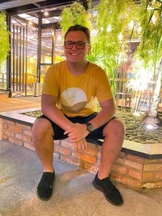
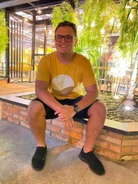

Os membros do grupo
O grupo Robo do Pica-Pau, o qual foi formado para desenvolver projetos colaborativos de uma materia da faculdade, idealizou um site para introduzir o universo da programaçao, robotica e eletronica para todos, tornando-a mais acessivel à comunidade e à possibilidade de aprender um pouco mais sobre as evoluçoes da tecnologia.
Os membros que compoem o grupo sao:
Pedro Dias: O membro responsavel por realizar o desenvolvimento dos codigos do site, tecnologo em eletroeletronica e com muita vontade de aprender e provar que pode resolver os mais diversos problemas e aprender o maximo que puder.
Mateus Sales: A mente criativa da equipe, responsavel pela parte de UX e UI, sendo tambem a pessoa que mais gera diversao no grupo.
Gustavo Rodrigues: Também responsáve pela parte de UI, e formtação geral do site, se interessa mais por backend.

Alex: O mestre em reunir informaçoes e desenvolver os textos que foram ultilizados nesse arquivo.

Todos os mebros tiveram um grande impacto em todas as partes de produçao do projeto.
Os membros que compoem o grupo sao:
Pedro Dias: O membro responsavel por realizar o desenvolvimento dos codigos do site, tecnologo em eletroeletronica e com muita vontade de aprender e provar que pode resolver os mais diversos problemas e aprender o maximo que puder.
Mateus Sales: A mente criativa da equipe, responsavel pela parte de UX e UI, sendo tambem a pessoa que mais gera diversao no grupo.
Gustavo Rodrigues: Também responsáve pela parte de UI, e formtação geral do site, se interessa mais por backend.
Alex: O mestre em reunir informaçoes e desenvolver os textos que foram ultilizados nesse arquivo.

Todos os mebros tiveram um grande impacto em todas as partes de produçao do projeto.